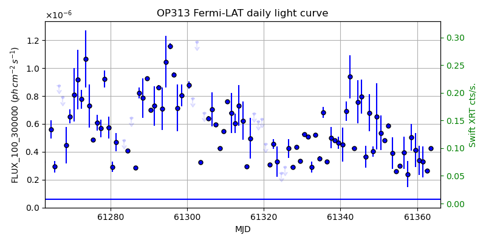
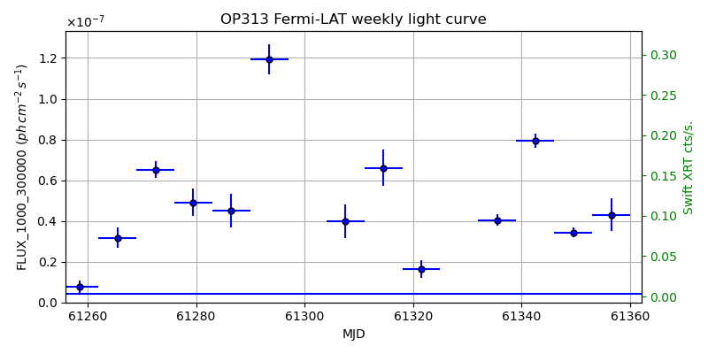

LAT Lightcurve site: https://fermi.gsfc.nasa.gov/ssc/data/access/lat/msl_lc/source/OP_313
Swift site: https://www.swift.psu.edu/monitoring/source.php?source=1308+326
NED: Query
Time of last update of this page: UT: 2026-11-20 16:26 (MJD: 61364.685)
| Property | Value |
|---|---|
| R.A. | 13:10:28.56 |
| Dec. | 32:20:42.0 |
| z | 0.996 |
| 3FGL SpectrumType | LogParabola |
| 3FGL PL Index | |
| 3FGL Flux_100_300000 | 6.07e-08 1 / (s cm2) |
| 3FGL Flux_1000_300000 | 4.05e-09 1 / (s cm2) |
| 3FGL Flux >200 GeV | 2.33e-12 1 / (s cm2) |
| 3FGL Extrap. Crab >200 GeV | 0.01 |
| 3FGL Flux After EBL Absorption >200GeV | 3.98e-14 1 / (s cm2) |
| 3FGL EBL Crab Fraction >200GeV | 0.00 |

| MJD | dMJD | Flux | dFlux | Frac3FGL | FracCrab>200GeV | EBLFracCrab>200GeV |
|---|---|---|---|---|---|---|
| 61359.50 | 0.50 | 4.13e-07 | 1.21e-07 | 6.81 | 0.07 | 0.00 |
| 61360.50 | 0.50 | 3.38e-07 | 1.04e-07 | 5.57 | 0.05 | 0.00 |
| 61361.50 | 0.50 | 3.28e-07 | 1.09e-07 | 5.40 | 0.05 | 0.00 |
| 61362.50 | 0.50 | 2.65e-07 | 6.59e-09 | 4.36 | 0.04 | 0.00 |
| 61363.50 | 0.50 | 4.24e-07 | 9.26e-09 | 6.98 | 0.07 | 0.00 |
| MJD | dMJD | Flux | dFlux | Frac3FGL | FracCrab>200GeV | EBLFracCrab>200GeV |
|---|---|---|---|---|---|---|
| 61321.50 | 3.50 | 2.82e-07 | 3.48e-09 | 4.64 | 0.05 | 0.00 |
| 61335.50 | 3.50 | 4.36e-07 | 4.67e-08 | 7.18 | 0.07 | 0.00 |
| 61342.50 | 3.50 | 6.60e-07 | 4.78e-09 | 10.88 | 0.11 | 0.00 |
| 61349.50 | 3.50 | 5.07e-07 | 5.89e-09 | 8.35 | 0.08 | 0.00 |
| 61356.50 | 3.50 | 3.57e-07 | 2.38e-09 | 5.88 | 0.06 | 0.00 |

| MJD | dMJD | Flux | dFlux | Frac3FGL | FracCrab>200GeV | EBLFracCrab>200GeV |
|---|---|---|---|---|---|---|
| 61359.50 | 0.50 | 6.84e-08 | 2.46e-08 | 16.91 | 0.17 | 0.00 |
| 61360.50 | 0.50 | 6.48e-08 | 1.99e-08 | 16.01 | 0.16 | 0.00 |
| 61361.50 | 0.50 | 3.58e-08 | 4.81e-09 | 8.84 | 0.09 | 0.00 |
| 61362.50 | 0.50 | 3.87e-08 | 1.33e-08 | 9.57 | 0.09 | 0.00 |
| 61363.50 | 0.50 | 2.91e-08 | 0.00e+00 | 0.00 | 0.00 | 0.00 |

| MJD | dMJD | Flux | dFlux | Frac3FGL | FracCrab>200GeV | EBLFracCrab>200GeV |
|---|---|---|---|---|---|---|
| 61321.50 | 3.50 | 1.65e-08 | 4.30e-09 | 4.07 | 0.04 | 0.00 |
| 61335.50 | 3.50 | 4.04e-08 | 2.75e-09 | 9.98 | 0.10 | 0.00 |
| 61342.50 | 3.50 | 7.93e-08 | 3.65e-09 | 19.61 | 0.19 | 0.00 |
| 61349.50 | 3.50 | 3.44e-08 | 2.51e-09 | 8.50 | 0.08 | 0.00 |
| 61356.50 | 3.50 | 4.31e-08 | 8.03e-09 | 10.64 | 0.10 | 0.00 |
--------------------------------------------------------- Using user-supplied coords: 13:10:28.56 32:20:42.0 2000 --------------------------------------------------------- FLWO UT night of: 2026-11-21 Local Sid. @ Midnight: 03:37 Sunset (-15.0) (local, UT): 18:33 01:33 Sunrise (-15.0) (local, UT): 05:47 12:47 Moonrise (local, UT): Moonset (local, UT): 03:40 10:40 Moon phase: 0.85 --------------------------------------------------------- AzTime LSID UT Obj_el Obj_az Mn_el Mn_az Sep. --------------------------------------------------------- 18:33 22:09 01:33 -12.9 321.6 47.9 117.4 139.7 19:03 22:39 02:03 -16.7 326.9 53.3 125.0 139.6 19:33 23:09 02:33 -19.9 332.7 58.2 134.7 139.5 20:03 23:39 03:03 -22.5 338.9 62.3 146.9 139.4 20:33 00:09 03:33 -24.4 345.5 65.1 162.1 139.3 21:03 00:39 04:03 -25.7 352.4 66.3 179.7 139.2 21:33 01:09 04:33 -26.1 359.5 65.4 197.5 139.1 22:03 01:39 05:03 -25.8 6.6 62.9 213.2 139.0 22:33 02:09 05:33 -24.7 13.5 59.0 225.9 138.9 23:03 02:39 06:03 -22.8 20.1 54.2 235.9 138.8 23:33 03:09 06:33 -20.3 26.4 48.9 243.9 138.7 00:03 03:39 07:03 -17.1 32.3 43.2 250.4 138.6 00:33 04:10 07:33 -13.5 37.6 37.3 255.9 138.5 01:03 04:40 08:03 -9.4 42.6 31.2 260.7 138.4 01:33 05:10 08:33 -3.9 47.1 25.1 265.1 138.3 02:03 05:40 09:03 0.5 51.2 19.0 269.2 138.3 02:33 06:10 09:33 5.3 55.0 12.9 273.0 138.2 03:03 06:40 10:03 10.6 58.5 6.8 276.9 138.1 03:33 07:10 10:33 16.1 61.7 1.0 280.7 138.0 04:03 07:40 11:03 21.8 64.7 -4.9 284.7 137.9 04:33 08:10 11:33 27.6 67.4 -11.1 288.8 137.9 05:03 08:40 12:03 33.6 70.0 -16.8 293.2 137.8 05:33 09:10 12:33 39.6 72.4 -22.3 298.1 137.7 05:47 09:25 12:47 42.6 73.5 -24.8 300.5 137.7 --------------------------------------------------------- Dark hours >55 deg.: 0.00